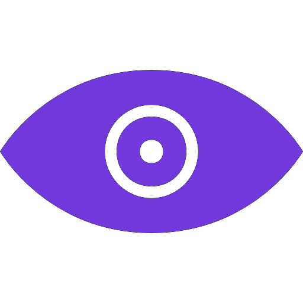

Temporada 3 Info
Eu sei que a próxima temporada está demorando um tempo, mas eu espero que, até pelo menos
O início do ano que vem nós possamos estar em Atheian Chronicles (por sinal, vai ganhar uma página dedicada nesse site depois).
Sobre a temporada em si, creio que o ritmo dela seja até mais rápido por conta
Que todo mundo vai ter sessões solo mais do que gerais por conta de todo mundo.
estar em times bem diferentes. Então eu vou tentar equilibrar, deixando os players lutarem entre si (coisa que será o principal foco), além da lore, que dessa vez será focada no VESSEL em si, mas isso praticamente leva à lore abordada nessa temporada ser: VESSEL > ENTIDADES > Honest e Idios. Parece muita coisa para uma temporada só, mas acredite, isso tudo se junta muito bem.
Também planejo trazer mais coisas que mostrei em Sacrilégio, já que a timeline está minimamente perto dele, junto de outros personagens que não vemos faz um tempo, por isso ela deve ter umas 4 sagas.
A próxima temporada vai definir se os conectados vão prevalecer nesse mundo ou vão decair de vez. Tudo vai estar nas mãos de vocês.
Inspirações para a temporada:
Underverse,
Bleach e
20th Century Boys
Tales of Elementaris é um RPG de mesa online criado por mim João Pedro (JP) e feito com meu grupo de amigos. As sessões acontecem principalmente pelo Discord, além de outros aplicativos utilizados durante as campanhas.
O RPG utiliza um sistema próprio, inspirado em diversos sistemas de RPG de mesa, especialmente Ordem Paranormal, mas também incorpora mecânicas originais desenvolvidas ao longo do projeto.
O mundo de Elementaris existe dentro de um gigantesco programa de computador conhecido como V.E.S.S.E.L. — um multiverso virtual formado por inúmeros mundos e dimensões. Nesse universo, existem elementos especiais capazes de conceder habilidades que podem ajudar ou piorar a vida de muitas pessoas.
Elementaris possui atualmente duas temporadas com 11 Sagas neste momento.